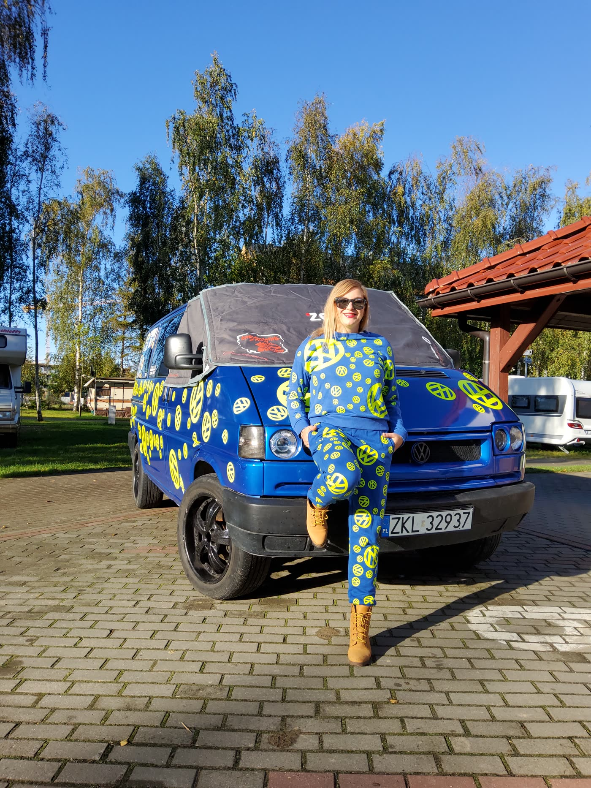
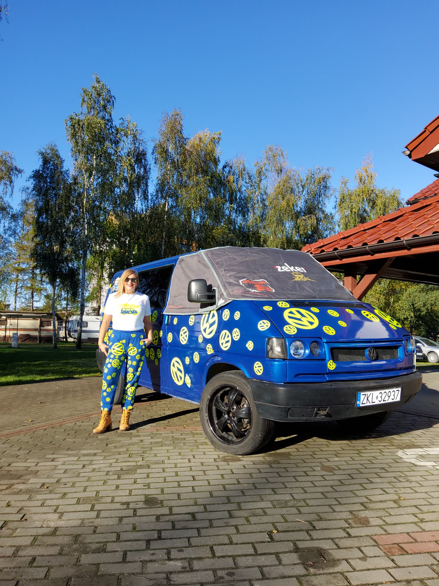

Ich bin Tussy — ich reise mit meinem VW T4 durch Europa, sammle die schönsten Stellplätze und zeige dir auf YouTube, wie Vanlife wirklich aussieht: Traumstrände inklusive Ölwechsel.

Roadtrips, Pannen, Traumbuchten und ehrliche Kosten — alles ungeschönt auf meinem Kanal.
Reisefolgen, Schrauber-Tutorials und Q&As aus dem Van — schau vorbei und sag hallo in den Kommentaren!
Glocke aktivieren und jeden Sonntag mitreisen.
Von der Nordsee über Polen bis nach Italien und Spanien: Klick auf eine Station für meine ehrlichen Tipps — Stellplatz, beste Reisezeit und das, was in keinem Reiseführer steht.
Mein T4 wird mir zu klein: Warum ich den LKW-Schein mache und vom Expeditionsmobil träume. Begleite mich!
Camper-AlltagWarum ich Fan bin, was beim ersten Modell schieflief und mein Katzenstreu-Trick für den Feststoffbehälter.
DIY & ReparaturWie das System funktioniert und wie du es an einem Wochenende passgenau für deinen Camper baust.

Geschminkt, autark und mit meinem VW T4 quer durch Europa. Im eigenen Van bin ich seit 2020 unterwegs — Camping selbst habe ich aber schon mit der Muttermilch aufgesogen. Angefangen hat alles mit einem silbernen T4 Caravelle (Bj. 1998, VR6) — nach einem Motorschaden kamen der Rote und schließlich mein heutiger Begleiter, der Blaue: royalblau unter gelben VW-Stickern. Ich zeige dir das Reisen aus meiner Sicht: ehrlich, unabhängig und mit Wimperntusche am Ölmessstab.